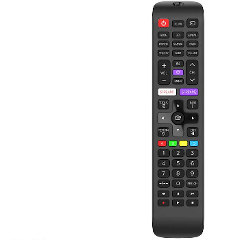

Comandament a distància - Philips SRP4010/10
| Tipus de dispositiu | Comandament a distància |
|---|---|
| Compatible amb | Samsung- TV, TDT, CABLE, SAT, Reproductor de Blu-ray, DVD |
| Tipus de transmissió | Inalàmbrica |
| Característiques especials | Distància de 10 metres, Funció d'aprenentatge |
| Color del producte | Negre |
| Contingut | Comandament a distància |
- Amb el comandament Philips SRP4010/10, per a Samsung, en color negre, podràs sempre triar entre les teves sèries preferides, amb més facilitat.
- Compatibilitat total amb tots els codis IR de televisors Samsung
- El comandament funciona amb Smart TV i altres tipus de televisors anteriors.